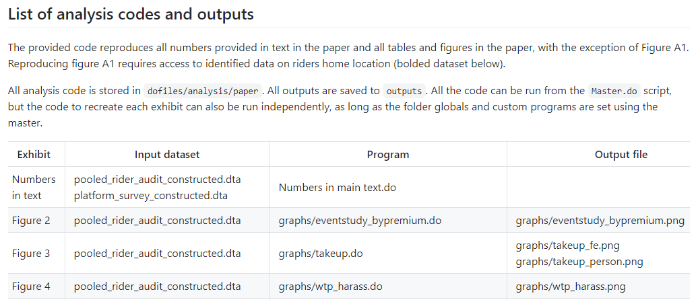
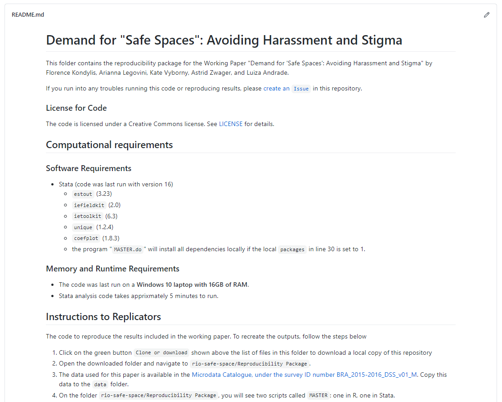

Chapter 7 Publishing reproducible research outputs
Publishing research typically involves preparing many iterations of data, code, and code output files, with inputs from multiple collaborators. This process can quickly become unwieldy. It is in nobody’s interest for a skilled and busy researcher to spend days renumbering figures, tables, or references when a reasonable amount of up-front effort can automate the task. Similarly, simultaneous collaboration should not involve the repetitive and error-prone task of manually resolving sets of track-change documents with conflicting edits. Furthermore, for most development research projects, a working paper or a policy brief is not the end of the publication stage. Academic journals and research consumers increasingly require reproducibility packages containing the data, code, and supporting materials needed to recreate the results. All working papers resulting from DIME projects are required to produce a reproducibility package and pass a reproducibility check. Replication materials make an intellectual contribution in their own right, because they enable others to learn from the process and better understand the results obtained. If the analysis process is organized according to the general principles outlined in earlier chapters, publication will not require substantial reorganization of the work already done. Hence, publication is the culmination of the system of transparent, reproducible, and credible research introduced in the first chapter of this book.
This chapter recommends tools and workflows for efficiently managing collaboration on research and policy outputs and ensuring reproducible results. The first section discusses how to use dynamic documents to collaborate on writing. The second section covers how to prepare and publish original data, an important research contribution in its own right. The third section provides guidelines for preparing functional and informative reproducibility packages. In all cases, technology is evolving rapidly, and the specific tools noted here may not remain cutting edge, but the core principles involved in publication and transparency will endure. Box 7.1 summarizes the main points, lists the responsibilities of different members of the research team, and supplies a list of key tools and resources for implementing the recommended practices.
BOX 7.1 SUMMARY: PUBLISHING REPRODUCIBLE RESEARCH OUTPUTS
Whether writing a policy brief or academic article or producing some other kind of research product, it is important to create three final outputs that are ready for public release (or internal archiving if not public).
- The data publication package. If the researcher holds the rights to distribute data that have been collected or obtained, this information should be made available to the public as soon as feasible. This release should
- Contain all nonidentifying variables and observations originally collected in a widely accessible format, with a data codebook describing all variables and values;
- Contain original documentation about the collection of the data, such as a survey questionnaire, API script, or data license;
- Be modified or masked only to correct errors and to protect the privacy of people described in the data; and
- Be appropriately archived and licensed, with clear terms of use.
- The research reproducibility package. Either researchers or their organization will typically have the rights to distribute the code for data analysis, even if access to the data is restricted. This package should
- Contain all code required to derive analysis data from the published data;
- Contain all code required to reproduce research outputs from analysis data;
- Contain a
READMEfile with documentation on the use and structure of the code; and - Be appropriately archived and licensed, with clear terms of use.
- The written research product(s). These products should be
- Written and maintained as a dynamic document, such as a LaTeX file;
- Linked to the locations of all code outputs in the code directory;
- Recompiled with all final figures, tables, and other code outputs before release; and
- Authored, licensed, and published in accordance with the policies of the organization or publisher.
Key responsibilities for task team leaders and principal investigators
- Oversee the production of outputs, and know where to obtain legal or technical support if needed.
- Have original legal documentation available for all data.
- Understand the team’s rights and responsibilities regarding data, code, and research publication.
- Decide among potential publication locations and processes for code, data, and written materials.
- Verify that replication material runs and replicates the outputs in the written research product(s) exactly.
Key responsibilities for research assistants
- Rework code, data, and documentation to meet the specific technical requirements of archives or publishers.
- Manage the production process for collaborative documents, including technical administration.
- Integrate comments or feedback, and support proofreading, translation, typesetting, and other tasks.
Key Resources
- Published data sets in the DIME Microdata Catalog at https://microdata.worldbank.org/index.php/catalog/dime/about
- Access to DIME LaTeX resources and exercises at https://github.com/worldbank/DIME-LaTeX-Templates
- DIME Research Reproducibility Standards at https://github.com/worldbank/dime-standards
- Template
READMEfor social science replication packages at https://doi.org/10.5281/zenodo.4319999
Publishing research papers and reports
Development research is increasingly a collaborative effort. This trend reflects changes in the economics discipline overall: the number of sole-authored research outputs is decreasing, and the majority of recent papers in top journals have three or more authors (Kuld and O’Hagan (2017)). As a consequence, documents typically pass back and forth between several writers before they are ready for publication or release. As in all other stages of the research process, effective collaboration requires the adoption of tools and practices that enable version control and simultaneous contributions. This book, for example, was written in dynamic document formats (LaTeX and Markdown) and managed on GitHub. All the versions and the history of changes can be viewed at https://github.com/worldbank/dime-data-handbook. As outlined in chapter 6, dynamic documents are a way to simplify writing workflows: updates to code outputs that appear in these documents, such as tables and figures, can be passed into the final research output with a single click, rather than being copied and pasted or otherwise handled individually. Managing the writing process in this way improves organization and reduces error, such that there is no risk that materials will be compiled with out-of-date results or that completed work will be lost or redundant.
Using LaTeX for written documents
As discussed in chapter 6, LaTeX is currently the most widely used software for
dynamically managing formal manuscripts and policy outputs. It is also becoming
more popular for shorter documents, such as policy briefs, with the
proliferation of skills and templates for these kinds of products. LaTeX uses
explicit references to the file path of each code output (such as tables and
figures), which are reloaded from these locations every time the final document
is compiled. This is not possible by default in, for example, Microsoft Word.
There, you have to copy and paste each object whenever tables, graphs, or other
inputs are updated. As time goes on, it becomes increasingly likely that a
mistake will be made or something will be missed. In LaTeX, instead of writing
in a “what-you-see-is-what-you-get” mode as is done in Word, writing is done in
plain text in a .tex file, interlaced with coded instructions formatting the
document and linking to exhibits (similar to HTML). LaTeX manages tables and
figures dynamically and includes commands for simple markup such as font styles,
paragraph formatting, section headers, and the like. It includes special
controls for footnotes and endnotes, mathematical notation, and bibliography
preparation. It also allows publishers to apply global styles and templates to
written material, reformatting entire documents in a house style with only a few
keystrokes.
Although LaTeX can produce complex formatting, such formatting is rarely needed for academic publishing because academic manuscripts are usually reformatted according to the style of the publisher. (Researchers creating policy briefs and other self-produced documents may desire extensive typesetting and investments in custom templates and formatting.) In academia at least, it is rarely worth the investment to go beyond basic LaTeX tools: the title page, sections and subsections, figures and tables, mathematical equations, bolding and italics, footnotes and endnotes, and, last but not least, references and citations. Many of these functionalities, including dynamic updating of some outputs, can be achieved in Microsoft Word through the use of plugins and careful workflows. If it is possible to maintain such a workflow, then this approach is acceptable, but moving toward the adoption of LaTeX is recommended when possible.
One of the most important tools available in LaTeX is the BibTeX citation and
bibliography manager (Kopka and Daly (1995)). BibTeX keeps all of the references that
might be used in a .bib file and then references them using a simple command
typed directly in the document. Specifically, LaTeX inserts references in text
using the cite command. Once this is written, LaTeX automatically pulls all
the citations into text and creates a complete bibliography based on the
citations used to compile the document. The system makes it possible to specify
exactly how references should be displayed in text (for example, as superscripts
or as inline references) as well as how the bibliography should be styled and in
what order (such as Chicago, Modern Language Association, Harvard, or other
common styles). The same principles that apply to figures and tables are
therefore applied here: references are changed in one place (the .bib file), and
then everywhere they are used they are updated consistently with a single
process. BibTeX is used so widely that it is natively integrated in Google
Scholar. Because different publishers have different requirements, it is quite
useful to be able to adapt this and other formatting very quickly, including
through publisher-supplied templates where available.
Because it follows a standard code format, LaTeX has one more useful trick: the
ability to convert raw documents into Word or several other formats using
utilities such as pandoc, a free and open-source document converter
(https://pandoc.org). Even though conversion to Word is required for some
academic publishers and can even be preferred for some policy outputs, using
LaTeX to prepare these products is still recommended. Exporting to Word should
be done only at the final stage, when submitting materials. A .csl file
(https://github.com/citation-style-language/styles), which styles the
citations in a document, can also be applied automatically in this process so
references follow the style of nearly any journal desired. Therefore, even if it
is necessary to provide .docx versions or track-change versions of materials
to others, these versions can be created effortlessly from a LaTeX document
using external tools like Word’s compare feature to generate integrated
trackchange versions when needed.
Getting started with LaTeX as a team
Although starting to use LaTeX may be challenging, it offers valuable control
over the writing process. Because it is written in a plain-text file format,
.tex can be version-controlled using Git. Contributions and version histories
can be managed using the same system recommended for data work. DIME Analytics
has created a variety of templates and resources that can be adapted to
different needs, available at
https://github.com/worldbank/DIME-LaTeX-Templates. Integrated editing and
compiling tools like TeXstudio (https://www.texstudio.org) and atom-latex
(https://atom.io/packages/atom-latex) offer the most flexibility to work with
LaTeX in teams.
Although ultimately worth the effort, setting up LaTeX environments locally is not always simple, particularly for researchers who are new to working with plain-text code and file management. LaTeX requires all formatting to be done in its special code language and is not always informative when something has been done wrong. This situation can be off-putting very quickly for people who simply want to begin writing, and those who are not used to programming may find it difficult to acquire the necessary knowledge.
Cloud-based implementations of LaTeX can make it easier for the team to use LaTeX without all members having to invest in new skills or set up matching software environments; they can be particularly useful for first forays into LaTeX writing. One example of cloud-based implementation is Overleaf (https://www.overleaf.com). Most such sites offer a subscription feature with useful extensions and various sharing permissions, and some offer free-to-use versions with basic tools that are sufficient for a broad variety of applications, up to and including writing a complete academic paper with coauthors.
Cloud-based implementations of LaTeX have several advantageous features for teams compared to classic desktop installations. First, because they are hosted completely online, they avoid the inevitable troubleshooting required to set up a LaTeX installation on various personal computers run by different members of a team. Second, they typically maintain a single, continuously synced copy of the document so that different writers do not create conflicted or out-of-sync copies or need to deal with Git themselves to maintain that sync. Third, they typically allow collaborators to edit documents simultaneously, although different services vary the number of collaborators and documents allowed at each subscription tier. Fourth, some implementations provide a “rich text” editor that behaves similarly to familiar tools like Word, so that collaborators can write text directly into the document without worrying too much about the underlying LaTeX coding. Cloud services usually offer a convenient selection of templates so it is easy to start a project and see results right away without knowing a lot of the code that controls document formatting.
Cloud-based implementations of LaTeX also have disadvantages. Some up-front learning is still required, except when using the rich text editor. Continuous access to the internet is necessary, and updating figures and tables may require a file upload that can be tough to automate. Although some services offer ways to track changes and even to integrate a Git workflow, version control is not as straightforward as using Git locally. Finally, cloud-based services also vary dramatically in their ability to integrate with file systems that store code and code outputs, and it is necessary to practice an integrated workflow depending on what is available. Some teams adopt cloud-based tools as a permanent solution, although DIME recommends shifting eventually to local editing and compiling using tools such as TexStudio, while using Git for version control. See box 7.2 for the workflow adopted by the Demand for Safe Spaces team.
BOX 7.2 PUBLISHING RESEARCH PAPERS AND REPORTS: A CASE STUDY FROM THE DEMAND FOR SAFE SPACES PROJECT
The Demand for Safe Spaces project produced a policy brief and a working paper,
among other outputs. The policy brief was produced in accordance with the DIME
communications protocols. For its production, the graphs exported by R and Stata
were saved in .eps format and shared with a designer who adapted them to fit
DIME’s visual identity. The research paper was written in LaTeX through the
Overleaf platform and was published as World Bank Policy Research Working
Paper 9269 (Kondylis et al. (2020)).
See the policy brief at http://pubdocs.worldbank.org/en/223691574448705973/Policy-Brief-Demand-for-Safe-Spaces.pdf. See the working paper at https://openknowledge.worldbank.org/handle/10986/33853.
Preparing research data for publication
Although the focus so far has been on written materials, it is also necessary to consider how to publish the data used in research. The open science community views data publication112 both as a citable output and as a necessary transparency measure. Fortunately, it is a conceptually simple task to produce and catalog the required materials. Two separate collections should be cataloged. First, it is necessary to catalog the clean data with all of the variables corresponding directly to fields in the original data set or data collection instrument (this step is not required if the data are secondary data not produced by the team, but explaining carefully the process of acquiring the data is necessary). At the publication stage, if the steps outlined in chapter 5 have been followed, a cleaned data set and supporting documentation will be ready. Projects that did not follow these steps from the beginning, but still need to organize a data release, will find valuable advice in (Dupriez and Greenwell (2007)).
Second, it is necessary to catalog separately the analysis data set used for the research output being published. This data set is typically included in the replication package for the research output (for an example, see box 7.3). The package should also include the data construction scripts that created transformed and derived indicators, project-specific information such as treatment assignment, and other indicators generated directly by the research team (constructed record linkages are another example). If the workflow recommended in chapter 6 has been followed, all of the necessary files and documentation will be at hand when the publication stage is reached.
De-identifying data for publication
Before publishing data, it is important to perform a careful final de-identification. The objective is to reduce the risk of disclosing confidential information in the published data set. Following the workflow outlined in this book, direct identifiers were removed as a first step after acquiring the data (see the discussion of initial de-identification in chapter 5). For the final de-identification, indirect identifiers are also removed, and the statistical disclosure risk113 of the data is assessed. Unlike direct identifiers, for which a link (or lack thereof) to public information is verifiable, indirect identifiers require an assessment of the likelihood that an individual can be singled out in the data and then linked to public information using combinations of available data. For example, seemingly innocuous variables such as US zip code, gender, and date of birth uniquely identify approximately 87 percent of the US population (Sweeney (2000)). In development data, information such as the size of a household, the age and marital status of household members, and the types of work or schooling they engage in may be more than enough to identify a person or family from a sufficiently small group.
Some tools have been developed to help researchers to de-identify data. For
example, the sdcMicro package (Benschop and Welch (n.d.)) has a useful feature
for assessing the uniqueness of records. It produces simple measures of the
identifiability of records from the combination of potentially indirectly
identifying variables and the application of common information-masking
algorithms, such as binning, top-coding, and jittering data before release. At
this stage, it is necessary to determine how sensitive the results are to these
transformations; it may be that masked data cannot be used for the
reproducibility package.
There is almost always a trade-off between accuracy and privacy. For publicly disclosed data, privacy should be favored. Stripping identifying variables from a data set may not be sufficient to protect the privacy of respondents, because of the risk of re-identification. One solution is to add noise to the data, as the US Census Bureau has proposed (Abowd (2018)). This solution makes explicit the trade-off between data accuracy and privacy. But there are, as of yet, no established norms for such “differential privacy” approaches: most approaches fundamentally rely on judging “how harmful” information disclosure would be. The fact remains that there is always a balance between the release of information (and therefore transparency) and the protection of privacy, and this balance should be examined actively and explicitly. The best step is to compile a complete record of the steps that have been taken so that the process can be reviewed, revised, and updated as necessary.
Removing variables results in loss of information, so the de-identification process requires careful assessment of the potential risk that could be caused by disclosure of a person’s identity or personal information. This risk varies widely, depending on the types of information collected and the overall vulnerability of the population. In extreme cases, such as when the population is highly vulnerable and combinations of information are highly specific, it may not be possible to release any data publicly at all. It is still necessary to catalog and cite the data, even if the information cannot be released publicly. In practice, this situation may mean publishing only a catalog entry providing information about the content of the data sets and how future users might request permission to access them (even if someone else will grant that permission). In some cases, it may be possible to release the data set but to embargo specific variables that are required for the analysis but cannot be released publicly. It may be necessary to grant access to the embargoed data for specific purposes, such as a computational reproducibility check required for publication, if done under careful data security protocols and approved by an institutional review board.
Publishing research data sets
Publicly documenting all original data acquired as part of a research project is an important contribution in its own right. Cataloging or archiving original data sets makes a significant contribution in addition to any publication of analysis results. Publicly releasing data allows other researchers to validate the mechanical construction of results, investigate what other results might be obtained from the same population, and test alternative approaches or answer other questions. It fosters collaboration and may enable researchers to explore variables and questions that the team did not have time to address.
The first step toward data publication is choosing the platform for publication. Various options exist; it is important to choose one that provides a digital object identifier (DOI) for the location of the data—even if its URL changes—and a formal citation for the data so that the information can be cited in other research outputs (https://www.doi.org). Two common platforms for development data are the World Bank’s Development Data Hub and Harvard University’s Dataverse. The World Bank’s Development Data Hub (https://datacatalog.worldbank.org) includes a Microdata Catalog and a Geospatial Catalog, where researchers can publish data and documentation for their projects (the Demand for Safe Spaces data were published in the Microdata Catalog, as detailed in box 7.3). The Harvard Dataverse (https://dataverse.harvard.edu) publishes both data and code, and its Datahub for Field Experiments in Economics and Public Policy (https://dataverse.harvard.edu/dataverse/DFEEP) is especially relevant for publishing impact evaluations. Both the World Bank Microdata Catalog and the Harvard Dataverse create data citations for deposited entries. DIME has its own collection of data sets in the Microdata Catalog, accessible at https://microdata.worldbank.org/catalog/dime, where data from DIME projects are published.
BOX 7.3 PUBLISHING RESEARCH DATA SETS: A CASE STUDY FROM THE DEMAND FOR SAFE SPACES PROJECT
The final analysis data sets used in the Demand for Safe Spaces working paper were published in the World Bank’s Microdata Catalog under survey ID number BRA_2015-2016_DSS_v01_M. Three separate data sets in Stata format are present: one with the platform survey data, one with riders’ observations, and one with supplemental crowding information. The entry also contains extensive documentation, including a study description, a list of the staff involved in data collection, all questionnaires used to collect data present in the analysis data set, outputs produced using the data, survey protocols, ethics protocols, and a data dictionary. Access is licensed, so anyone who is interested in downloading the data needs to request access to them, and the data are made available only after the authors approve this request. However, even without downloading the data, users can explore the distribution of each variable. The entry includes a template citation to be used whenever the data are referenced. Finally, a clear and transparent version-control system allows viewers to see when the data were first published and when they were last modified. See the Microdata Catalog entry at https://microdatalib.worldbank.org/index.php/catalog/11600.
Once a platform has been chosen, it is time to determine exactly what data will be published. As mentioned earlier, there are typically two types of data releases for a research project: complete (de-identified) original data sets and derivative data sets used for specific research outputs. Whether the original data set can be published depends on data ownership and licensing agreements. If the data were acquired through a survey that was contracted by the research team, the data most likely belong to the research team, and therefore the team has publication rights to both the original and the derivative data. If data were acquired from a partner through a licensing agreement, the terms of the license will determine publication rights. These data sets should match the survey instrument or source documentation as closely as possible and should not include indicators constructed by the research team. Releasing constructed data is often more straightforward; depending on data licensing, researchers who do not have rights to publish the original data may be able to publish derivative data sets prepared by the research team. These data sets usually contain only the constructed indicators and associated documentation and should also be included in the replication package.
When data are published, how they may be used and what license will be assigned to them have to be determined. It is essential to understand the rights associated with any data release and to communicate them to future users. Material without a license may never be reused. It is best to offer a license that is explicit and details whether and how specific individuals may access the data. Terms of use available in the World Bank Microdata Catalog include, in order of increasing restrictiveness: open access, direct access, and licensed access. Open access data are freely available to anyone and simply require attribution. Direct access data are available to registered users who agree to use the data for statistical and scientific research purposes only, to cite the data appropriately, and not to attempt to identify respondents or data providers or link the data to other data sets that could allow for reidentification. Licensed access data are restricted to users who submit a documented application detailing how they will use the data and who sign a formal agreement governing data use. The user must be acting on behalf of an organization, which will be held responsible for any misconduct. (See https://microdata.worldbank.org/index.php/terms-of-use for more details.)
Published data should be released in a widely recognized format. Although
software-specific data sets are acceptable accompaniments to the code (because
those precise materials are probably necessary), releasing data sets in
plain-text formats, such as .csv files, with accompanying codebooks should be
considered, because any researcher can use these files. Additionally, .pdf or
code versions of the data collection instrument or survey questionnaire should
be released so that readers can understand which data components are collected
directly in the field and which are derived. Together with the analysis data
set, the code that constructs any derived measures from the clean data set
should be released, so that others can learn from the work and adapt it as they
like.
Publishing a reproducible research package
Major journals often require researchers to provide both the data and the code required to recreate the results. Some even require the ability to reproduce the results themselves before they will approve a paper for publication (Vilhuber, Turrito, and Welch (2020)). Researchers who are producing a policy output, such as an open policy analysis (Hoces de la Guardia, Grant, and Miguel (2018)) or some other type of material (for example, see Andrade et al. 2019; Castaneda Aguilar, Debebe, and de Simone 2020; World Bank 2018) may also want to make their materials publicly reproducible. Even if the work is meant for use only inside the sponsoring organization, having a final set of production materials is still a valuable output. This set of materials, taken together, is often referred to as a reproducibility package. If the workflows described in this book have been followed, preparing the replication package will require only a small amount of extra work. If not, creating this package may take time. When the replication package has been completed, anyone who downloads it should be able to understand how the code produces results from the data and be able to reproduce them exactly by executing the included master script.
Organizing code for reproducibility
Before the code is released, it should be edited for content and clarity just as if it were written material. The purpose of releasing code is to allow others to understand exactly what was done to obtain the results and to enable them to apply similar methods in future projects. Other researchers should be able to reproduce individual portions of the analysis by making only small adjustments to the code. In either a scripts folder or the root directory, a master script should be included to allow someone else to run the entire project and recreate all raw code outputs by changing only a single line of code setting the root directory path. The code should be both functional and readable, through the use of a clear structure and extensive commenting. Code is often not written this way when it is first prepared, so it is important to review the content and organization so that a new reader can figure out what the code should do and how it does it. It is necessary to invest sufficient time in making code clean and readable before releasing the reproducibility package.
DIME requires all academic outputs to pass a computational reproducibility check before being submitted for publication. Several practices and requirements have been adopted to support the production of high-quality reproducibility packages. The materials for these practices are publicly available and are useful for checking the reproducibility of work. This reproducibility check is initiated by submitting a reproducibility package checklist, which is available in Pillar 3 of the DIME Standards GitHub repository at https://github.com/worldbank/dime-standards. DIME projects are required to organize code with a master script, to facilitate handovers across team members, and to make the computational reproducibility check a one-click exercise. Compliance with these and other coding standards at DIME is monitored through quarterly rounds of peer code reviews, which allow research assistants to improve their code and documentation as they are written, rather than having to revisit them in a rush near publication time. DIME projects are also expected to use Git and GitHub to document project work and collaboration and to keep the main branch up-to-date as a working edition.
Before a reproducibility package is publicly released, it is essential to make
sure that the code runs and produces the same results on the current setup and
on a fresh installation of the software. To ensure that code will run completely
on a new computer, any required user-written commands in the master script have
to be installed. In Stata, the commands ssc install or net install can be
used to install them. In R, options include the base command install.packages
and functions in the pacman package. Remember to indicate the package version
if relevant (in R, the renv package helps with tracking package versions). In
Stata, it may be preferrable to provide the underlying code for any
user-installed packages needed to ensure forward compatibility. System settings
like software version and memory used may also need to be defined when using
Stata. The ieboilstart114 command defines and applies these
settings for a chosen Stata version.
Finally, code inputs and outputs need to be identified clearly. A new user should, for example, be able to find and quickly recreate any files generated by the code, locate an output in the code, and correspond code to its outputs. Code should be broken into separate scripts as much as possible to minimize the need to search through long files. Someone reading the code should be able to figure out fairly easily what state the program will be in at any point without scrolling through hundreds of lines; similarly, they should not have to look in different files or faraway sections of code to make changes to outputs. Each file should be an understandable, independent selection of related processes. Readers should also be able to map all of the outputs of the code easily to where they appear in the associated published material, so it is necessary to ensure that the raw components of figures or tables are identified. For example, code outputs should correspond by name to an exhibit in the paper and vice versa. Documentation in the master script is often used to indicate this information, and supplying a compiling LaTeX document can also support this task. Code and code outputs not used in the final paper should be removed from the final replication package and archived for transparency.
Releasing a reproducibility package
Once the replication package has been prepared for public release, it is time to find a place to publish the materials. At the time of writing this handbook, there is no consensus on the best solution for publishing code, and different archives and storage providers cater to different needs. The technologies available are likely to change dramatically over the next few years; this section highlights the strengths and weaknesses of some current approaches.
Features to look for in a platform on which to release reproducibility packages include the possibility to store data and documentation as well as code, the creation of a static copy of content that cannot be changed or removed, and the assignment of a permanent DOI. Unlike data, code usually has few external constraints to publication. The research team owns the code in almost all cases, and code is unlikely to contain identifying information (though it is important to verify that it does not). Publishing code also requires assigning a license to it; most code publishers offer permissive licensing options. In the absence of a license, no one can reuse the code. It is common to, at most, require attribution and citation for reuse, without any barriers or restrictions to code access.
GitHub is one option for creating and releasing a reproducibility package. Making a public GitHub repository is free. The repository can hold any type of file; provide a structured, compressed download of the whole project; and allow others to look at alternate versions or histories. It is straightforward to upload a fixed directory to GitHub, apply a sharing license, and obtain a URL for the whole package. There is a strict size restriction of 100 megabytes per file and 100 gigabytes for the repository as a whole, so larger projects will need alternative solutions. However, GitHub is not the ideal platform on which to publish reproducibility packages. It is built to version-control code and to facilitate collaboration on it. It is not an archive, meaning that it does not guarantee the permanence of uploaded materials or the access URL, and it does not manage citations or noncode licenses by default. One suggestion is to combine GitHub with Zenodo (https://zenodo.org) or the Open Science Framework (OSF; https://osf.io), which can link easily to and import material from GitHub and apply a permanent URL, DOI, formal citation, general license, and archival services to it. Other options include the Harvard Dataverse and ResearchGate (https://www.researchgate.net).
Any of the aforementioned archival services is acceptable—the main requirement is that the system can handle the structured directory being submitted and that it can provide a stable URL for the project and report exactly what, if any, modifications have been made since initial publication. It is even possible to combine more than one tool, as long as the tools clearly reference each other. For example, code and the corresponding license can be published on GitHub, while referring to data published on the World Bank Microdata Catalog. Emerging technologies such as the “containerization” approach of CodeOcean (https://codeocean.com) offer to store both code and data in one repository and also provide an online workspace in which others can execute and modify code without having to download the tools and match the local environment used to create it.
In addition to code and data, an author’s copy or preprint of the article itself could be released along with these materials, but it is important to check with the publisher before doing so; not all journals will accept material that has been publicly released before its formal publication date, although, in most development research fields, the release of working papers is a fairly common practice. This release can be done on preprint websites, many of which are topic specific. It is also possible to use GitHub or OSF and link to the PDF file directly through a personal website or whatever medium is sharing the preprint. Using file-sharing services such as Dropbox or Google Drive is not recommended for this purpose, because their access is more restrictive, and organizations often restrict access to such platforms.
Finally, any reproducibility package should include an overview of its contents
and instructions on how to recreate outputs. Box 7.4 describes how the Demand
for Safe Spaces project released its reproducibility package. This overview is
typically provided in the form of a README file. A good README file guides
the reader through all of the items included in the package. Fortunately, a
consortium of social science data editors offers a very good template for such
documents, which can be found at https://doi.org/10.5281/zenodo.4319999.
BOX 7.4 RELEASING A REPRODUCIBILITY PACKAGE: A CASE STUDY FROM THE DEMAND FOR SAFE SPACES PROJECT
The reproducibility package for the Demand for Safe Spaces working paper was
released on the World Bank’s GitHub. The reproducibility package contains all of
the materials necessary for another researcher to access raw materials and
reproduce all of the results included with the paper, including a README.md
file with instructions for executing the code. Among other things, it provides
licensing information for the materials, software and hardware requirements
including time needed to run, and instructions for accessing and placing the
original data before running the code (which must be downloaded separately).
Finally, it has a detailed list of the code files that will run, their data
inputs, and the outputs of each process.


See the reproducibility package at https://github.com/worldbank/rio-safe-space.
Looking ahead
This chapter described the culmination of all of the efforts involved in acquiring, cleaning, processing, and analyzing data—the production of materials to share with the world that answer a scientific or policy question in a way that has never been done before. Figure 7.1 provides an overview of the outputs created by this process. Making sure that everything that was discovered and created is as broadly available and as easy to use as possible is the last step in producing scientific evidence from original data. This assurance is the purpose of all the rigor, organization, and documentation that are encouraged and detailed at every step of the process: because all of the research materials are continuously organized, shareable, secure, documented, and readable, they are both valuable to the research team and accessible to others.
Data publication is the release of data so they can be located, accessed, and cited. For more details, see the DIME Wiki at https://dimewiki.worldbank.org/Publishing_Data. See also pillar 5 of the DIME Research Standards at https://github.com/worldbank/dime-standards.↩︎
Disclosure risk is the likelihood that a released data record can be linked with the individual or organization it describes.↩︎
ieboilstartis a Stata command to standardize version, memory, and other Stata settings across all users for a project. It is part of theietoolkitpackage. For more details, see the DIME Wiki at https://dimewiki.worldbank.org/ieboilstart.↩︎